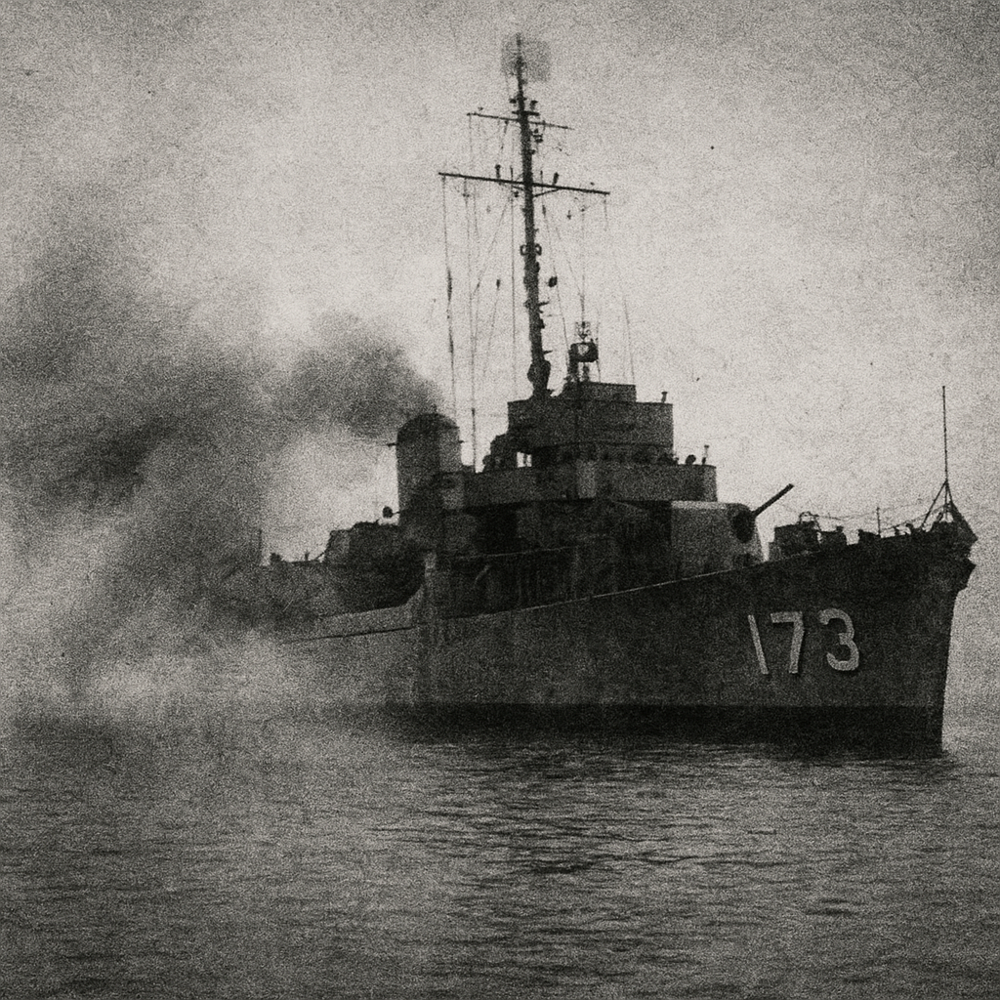

|
Филадельфийский эксперимент  Говорят, 28 октября 1943 года эсминец USS Eldridge исчез с радаров ВМФ США. Официальная версия — «магнитный эксперимент по маскировке». Но свидетели утверждают: корабль не просто стал невидимым — он исчез. И вернулся уже... другим. Я нашёл упоминание об «Eldridge» в микрофильмах военно-морских архивов. Дело было скрыто под кодом PX-472. Отчёт гласит: *«В ходе полевого теста наблюдались эффекты пространственной нестабильности. Экипаж испытал дезориентацию и тошноту. Один участник заявил, что видел берег с высоты птичьего полёта».* На этом месте документ обрывается. Дальше — вырезка. По показаниям очевидцев из порта Филадельфии, 28 октября корабль внезапно окутал зеленоватый туман, словно излучение. Через несколько секунд его не было. Спустя несколько минут он появился снова — уже у берега Норфолка, за сотни километров. На палубе — ужас. Некоторые моряки стояли неподвижно, будто вросли в металл. Другие исчезли. Те, кто выжил, рассказывали, что «падали сквозь небо» и слышали «шум, похожий на работу электростанции». Военное ведомство назвало это «дезинформацией». Но в 1952 году в журнале *Astounding Science Fiction* вышла заметка под названием Project Rainbow, где подробно описывалась установка с магнитными катушками вокруг корпуса судна. Автор не подписался. Позже стало известно, что имя «Eldridge» упоминал инженер по фамилии Камерон — человек, работавший с доктором Тесла за два года до его смерти. В августе 1998 года группа исследователей из Мэриленда проводила тест с мощными электромагнитами и зафиксировала короткое исчезновение металлического контейнера с приборами. Контейнер нашли через 40 секунд — в соседней комнате, на три метра левее. Сбой оборудования совпал с импульсом частоты 7,83 Гц — частотой резонанса Шумана, совпадающей с ритмами человеческого мозга. Если в 1943-м удалось “разорвать” пространство хотя бы на мгновение — значит, технология существует. И, возможно, уже применяется. Некоторые считают, что именно она легла в основу программ «Монтаук» и «Сигма». Другие — что корабль не вернулся полностью. Комментарий R.F.: я видел фотографию, где кормовой номер «173» размыт, будто растворён в воздухе. мне сказали — это эффект света. но свет не оставляет людей внутри стали. Архив: R.F. — Truth Archives Связь: theyalreadyhere@outlook.com ⟵ назад к статьям |